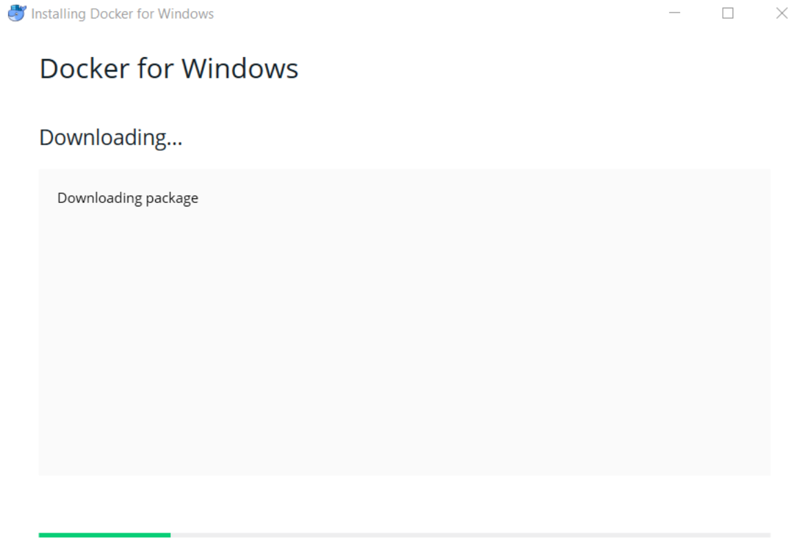
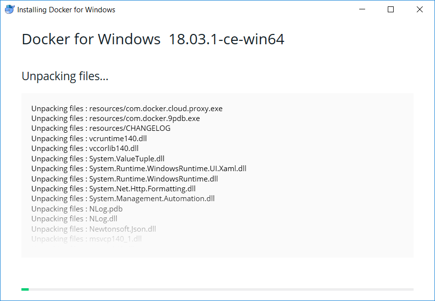
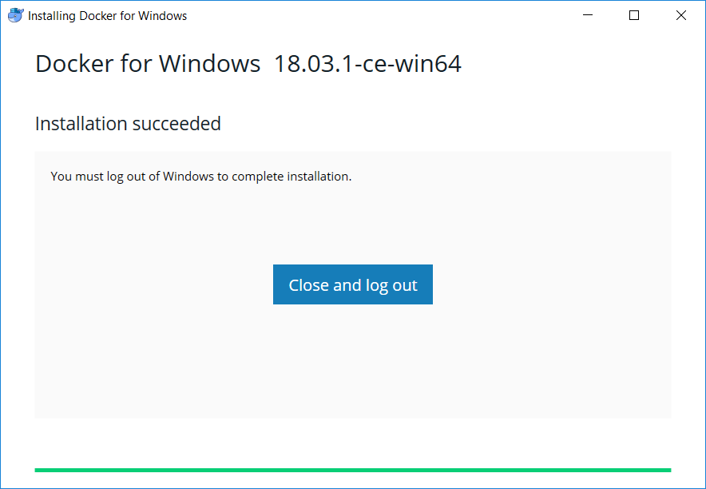
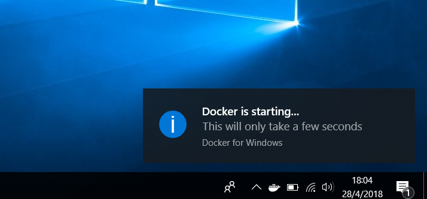
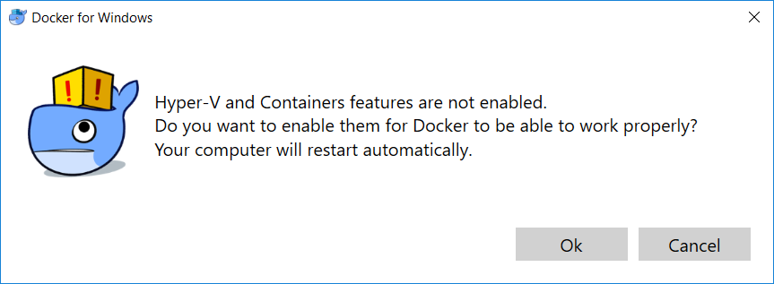
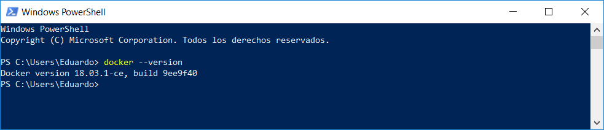
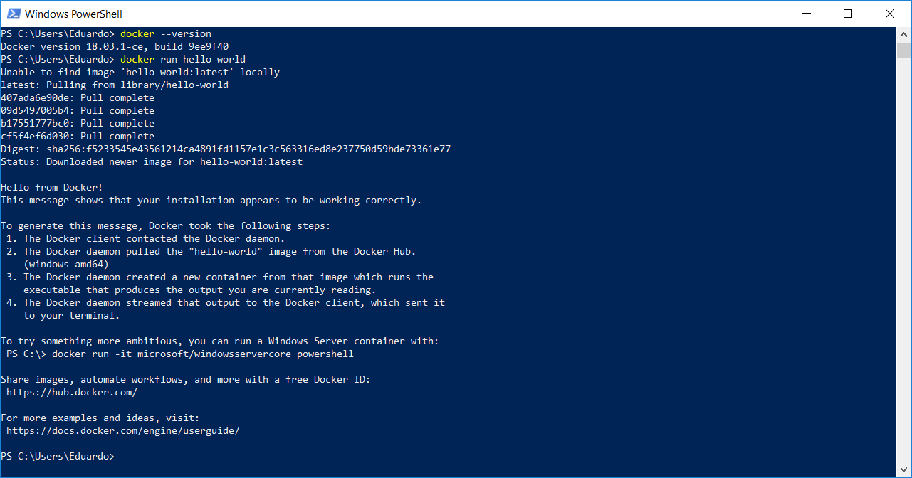

Before starting with the step by step guide, make sure you have Windows 10 Pro or Enterprise Edition, Docker will not run in others versions of Windows.
Double click to the downloaded installer (do it with Administrator privileges) and install.
Docker will automatically check for updates.

Check both items in configuration step:
Add shorcut to desktop.
Use Windows containers instead of Linux containers.
Wait until the installation finish unpacking files

Save and close all open programs that you are running, because finishing the installation will log out you session!

When you log, a message will appear!

The whale will have an animation of getting full of containers, this says that the service is not up yet!
Wait until it gets fully.
Once the process is completed, a window will appear click OK, and restart your computer. Again, save and close all running programs.

Open a Windows Powershell Console. And lets see if docker is correctly installed typing the following command.
To open a Windows Powershell Console use Windows+R combination and type "powershell". Hit enter and the CLI will appear.
Powershell Line Code
docker --version
If all it's all right, the version of Docker will show up.

Let's finish this part of the guide by installing a container from the hub, and getting into this new world
by printing "Hello from Docker". To do this type this command in the powershell:
Powershell Line Code
docker run hello-world

By running this command, Docker will download automatically from the hub a container that have and
image of a script that print in console "Hello from Docker", and tell us the steps that it took him to do that.
You have just installed and configured Docker, continue with the next step!